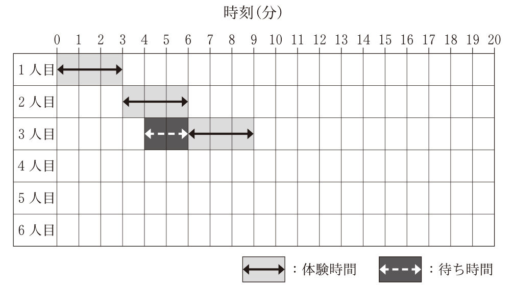

第3問 次の文章を読み，後の問い（問1～3）に答えよ。（配点25）
プログラミング部は毎年，文化祭で来訪者が体験できるゲーム作品を1点展示しており，部長のY さんは今年の展示方法を検討している。ゲームはできるだけ長く楽しんでもらいたいが，体験まで来訪者をあまり長時間待たせたくない。そこで，1人あたりのゲームの体験時間を決めるために，昨年のデータを用いて，体験時間を変えると来訪者の待ち時間がどのくらい変わるかを調べることにした。
問1 次の文章を読み，空欄 ア ～ ウ に当てはまる数字をマークせよ。また，空欄 エ ・ オ に入れるのに最も適当なものを，後の解答群のうちから一つずつ選べ。
まずY さんは，昨年の文化祭で記録していた来訪者の到着時刻を用いて，ゲーム体験を開始するまでの待ち時間の求め方を考えた。来訪者は到着した順番でゲームを体験し，同時刻に到着する来訪者はいないものとする。ゲームの体験時間は来訪者によらず同一で，昨年は1人3分間としていた。
図1は，縦軸が来訪者（1行目から到着順で記載している。）を，横軸が時刻（1人目の来訪者の到着時刻を0分とする。）を表し，3人目までの来訪者の体験時間と待ち時間を矢印で表している。なお，交替時間は考えないものとする。

1人目の来訪者の待ち時間はなく，ゲーム体験の開始時刻は0分，終了時刻は3分である。2人目は到着時刻が3分だったので，待ち時間がない。一方，3人目は4分に到着したが，2人目の終了時刻が6分のため，2分間の待ち時間が発生している。
次にY さんは，図1の残りの部分を完成させ，6人目までの来訪者の到着時刻，開始時刻，終了時刻，待ち時間を表1のとおりに整理した。4人目は到着時刻が10分で，3人目の終了時刻は ア 分のため，4人目の待ち時間はない。5人目の待ち時間は イ 分間，6人目の待ち時間は ウ 分間である。
| 来訪者 | 到着時刻 | 開始時刻 | 終了時刻 | 待ち時間 |
|---|---|---|---|---|
| 1人目 | 0 | 0 | 3 | 0 |
| 2人目 | 3 | 3 | 6 | 0 |
| 3人目 | 4 | 6 | ア | 2 |
| 4人目 | 10 | 10 | 13 | 0 |
| 5人目 | 11 | ？ | ？ | イ |
| 6人目 | 12 | ？ | ？ | ウ |
（表の一部を“？”で隠してある）
これらの結果からY さんは，2人目以降の来訪者について，開始時刻が「 エ より遅く到着した場合には オ ，それ以外の場合は エ 」になること，終了時刻が「来訪者本人の開始時刻と体験時間の和」，待ち時間が「来訪者本人の開始時刻と オ の差」で求められることを確認した。
問2 次の文章を読み，空欄 カ ～ コ に入れるのに最も適当なものを，後の解答群のうちから一つずつ選べ。ただし，空欄 カ ・ キ ， コ は同じものを繰り返し選んでもよい。また，空欄 カ ・ キ の解答の順序は問わない。
次に，Y さんは問1で整理した考え方に基づき，昨年の6人目までの来訪者の到着時刻を用いて2人目以降の来訪者の待ち時間を求めるプログラムを作成した（図2）。
(01)行目の変数taiken は体験時間を表す変数で，昨年の体験時間（3分間）を表す数値3を代入している。配列Touchaku，Kaishi，Shuryou はそれぞれ，各来訪者の到着時刻，開始時刻，終了時刻を格納する。すべての配列の添字は1から始まり，来訪者の到着順を表している。例えば，各配列の添字1の要素には，1人目の来訪者に関する値を格納する。配列Touchaku の各要素には来訪者の到着時刻を設定し，配列Kaishi，Shuryou の各要素は0で初期化する。(03)行目では，関数「要素数」を用いて変数kyakusu に来訪者数を代入する。
(06)行目では，1人目の終了時刻を設定する。(07)～(10)行目の繰り返しでは，i 番目の来訪者の開始時刻，終了時刻，待ち時間を順に求める。(08)行目で関数「最大値」を用いて開始時刻を，(09)行目で終了時刻を求める。(10)行目で待ち時間を表示する。
問3 次の文章を読み，空欄 サ ・ シ に入れるのに最も適当なものを，後の解答群のうちから一つずつ選べ。また，空欄 ス ・ セ に入れるのに最も適当なものを，図3の⓪～③のうちから一つずつ選べ。空欄 ソ に当てはまる数字をマークせよ。
Y さんは，昨年の様子から来訪者を10分間以上は待たせられないと考え，最も長く待たされる来訪者の待ち時間（以下，最長待ち時間と呼ぶ。）が10分間未満となる体験時間を調べるプログラムを作成した（図3）。
(03)行目からの繰り返しで各体験時間に対する最長待ち時間を求める。体験時間の上限は15分間とした。(04)～(09)行目の処理は図2のプログラムの(04)～(09)行目の処理と同じである。(10)～(14)行目で体験時間がtaiken 分間の場合の最長待ち時間を求め，10分間未満ならば体験時間と最長待ち時間を表示する。図3のプログラムの実行結果は，図4のようになった。
体験時間1分間：最長待ち時間0分間 体験時間2分間：最長待ち時間2分間 体験時間3分間：最長待ち時間4分間 体験時間4分間：最長待ち時間8分間
ある体験時間に対して最長待ち時間が10分間以上となった時点で，(04)行目以降の繰り返しをやめても実行結果は変わらない。そこでY さんは，最長待ち時間が10分間以上となった時点で処理を止めるために，(03)行目を「(taiken <= 15) and ( シ )の間繰り返す:」に変更した。「and」は「かつ」を意味する論理演算子であり，左右の式がともに真のときにだけ真となる。さらに，「taiken = 1」と「saichou = 0」を ス の位置に挿入した。また，「taiken = taiken + 1」を セ の位置に挿入した。
配列Kaishi の初期化処理の実行回数は，修正前のプログラムでは15回だったが，修正後のプログラムでは ソ 回となった。